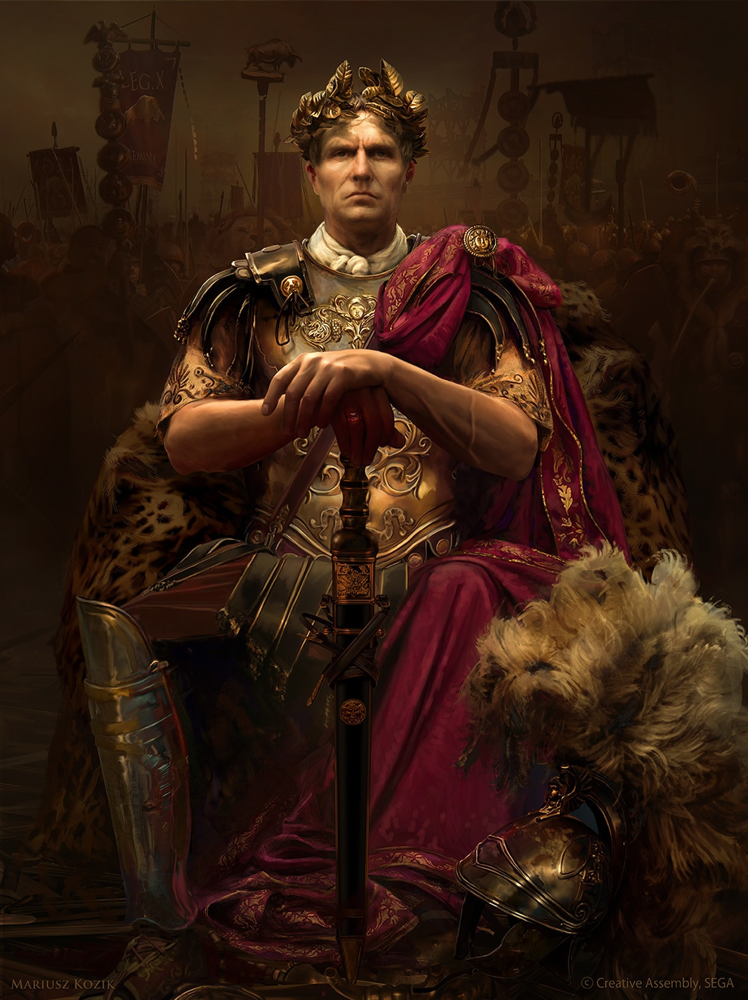

Total War: Rome 2 est un jeu vidéo de stratégie en temps réel développé par Creative Assembly et édité par Sega.
Le jeu se déroule durant l'Antiquité romaine, de la création de la République romaine jusqu'à la fondation de
l'Empire jusqu'a sa chute.
Le joueur peut y prendre le contrôle d'un peuple de l'Antiquité et y gérer l'économie de son empire, le
recrutement de
l'armée, la diplomatie, etc. S'en suivent des batailles en temps réel opposant des milliers d'unités aussi bien
navales
que terrestres sur un même champ de bataille. Le joueur devra considérer avec précaution les décisions à
prendre.
Lorsque le joueur prend une décision au cours de la campagne, il sera amené à en prendre d'autres qui ne
pourront
être
que la conséquence logique des décisions précédentes.
Il faudra alors gérer tous les aspects notamment la diplomatie avec les autres factions, la politique intérieure
de la faction, la dynastie (les mariages, l'héritage), la guerre, les parties adverses au vôtre
Une chose est à savoir, il n'y a pas de paix dans la guerre, il n'y a pas d'empereur sans pouvoir...